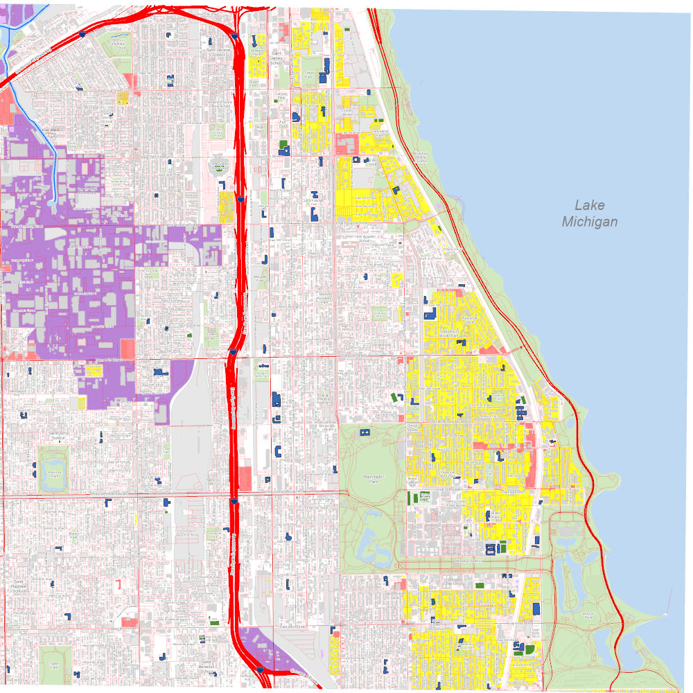
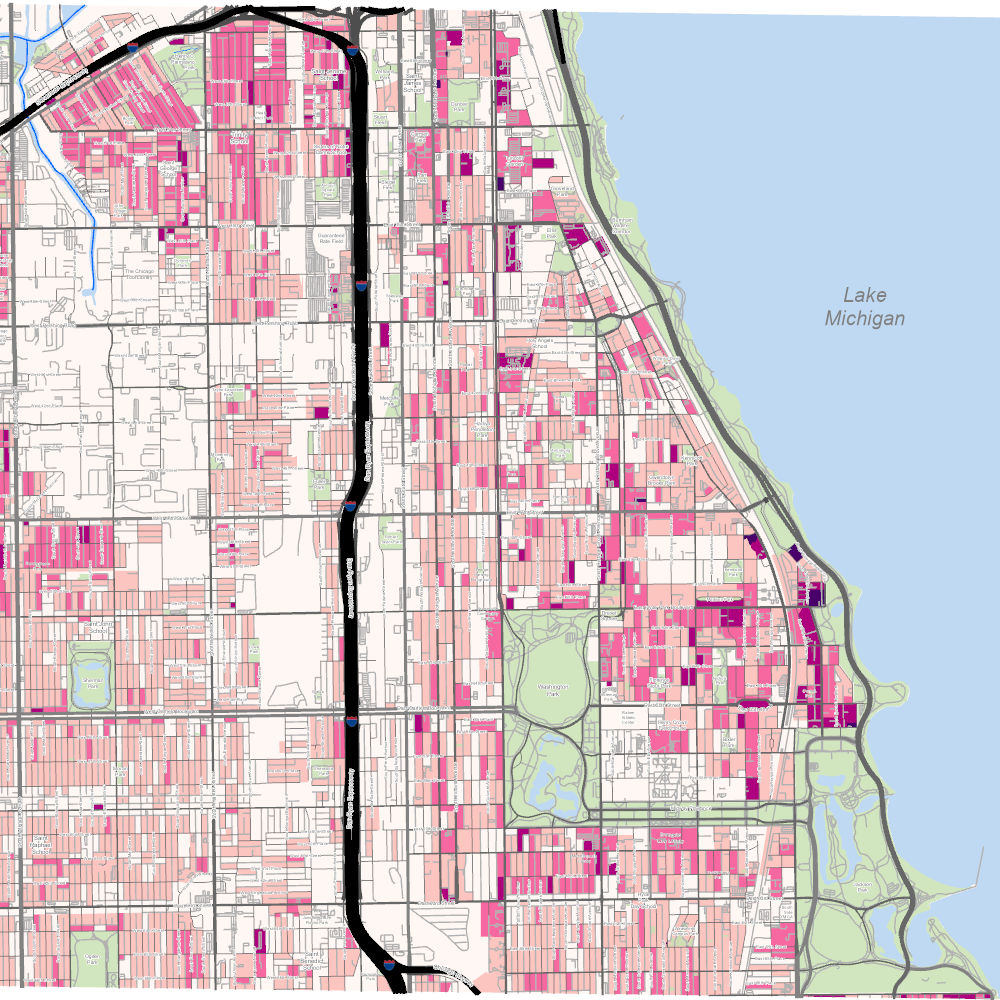
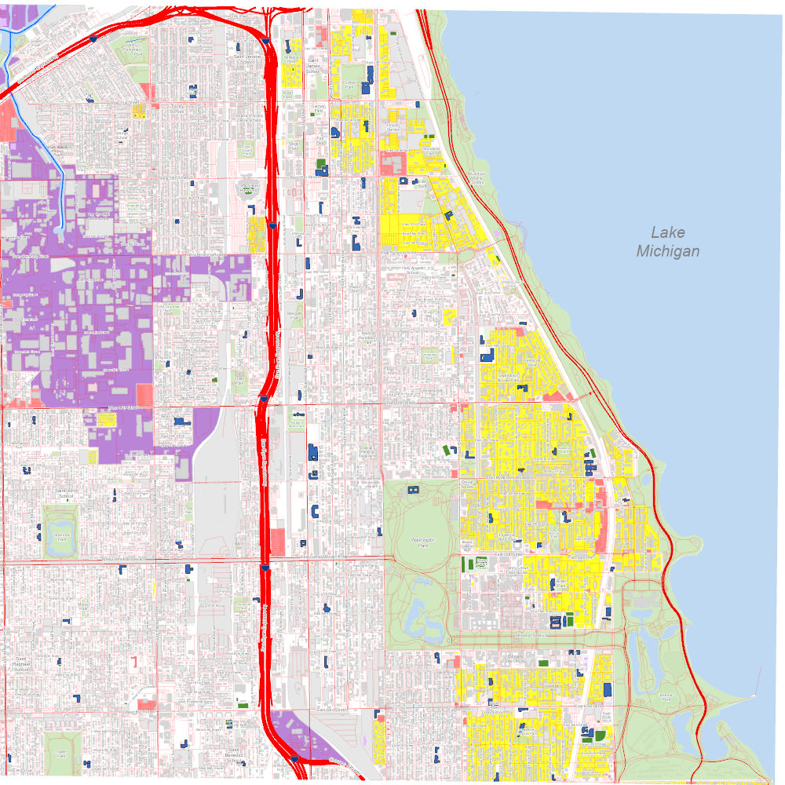
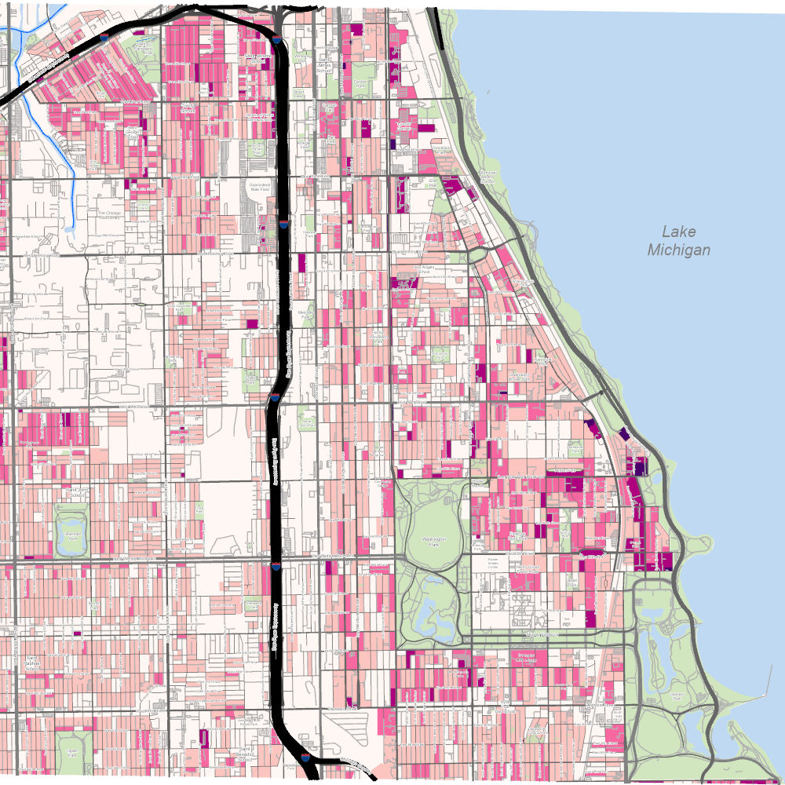

Monochrome to Colour
GIS Pros offers you the flexibility to produce maps in black and white and in colour.
- Endless map themes
- Your choice of subject area
- Render quantiative and qualitative data
- Large and small scale maps
- Appropriate labels across the entire map
- Customized colour schemes
 


